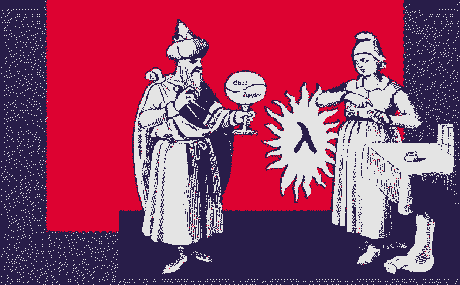

The Great Gift
On the beginning there was The Word. Word was spoken, Word mattered. -

Our benevolent creators gave us The Great Gift. The power to name things. And to make us creatures of the metaphore.Naming things invokes them into existence. Few magical words inscribed onto parched piece of paper and inserted into the gaping mouth hole of clay statue by learned man was enough to call the Golem to life.
Unnamed is unknown. The unknown is where chaos and peril lurks.
By the power of truthfully calling the thing, you are given the opportunity to become the master, to receive the power of command. A local habitation and a name bodies forth the things unknown.
Use it to be of service an take heed as the reality shifts: bear in mind that unnamed will be reemerging from the aspects of already named that you could not recognize.
There is at least one shorter screw. This black paint is lead based. This flower is infested with parasite. Politicians lie.
You can fall to the lowest common denominator with ease, yet take care not to stop at all times at the first plausible place. Many are counting on you to do exactly that. Always second guess, measure twice, cut once.
- The proper definition of a man is an animal that writes letters.
- Lewis Carroll, Roger Lancelyn Green (1989). The Selected Letters of Lewis Carroll, p.10, Springer
What have you named today?